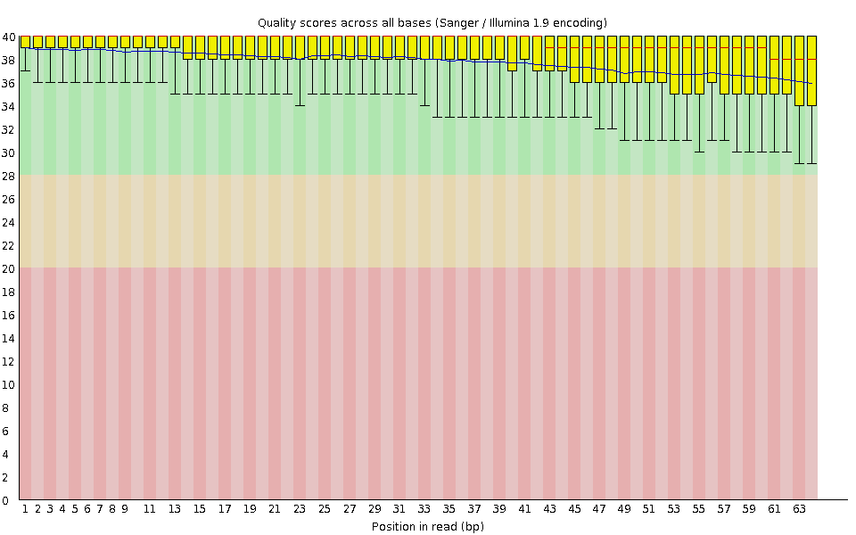
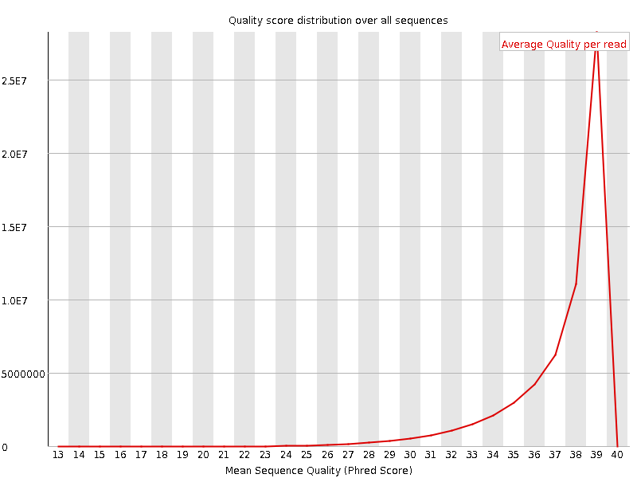
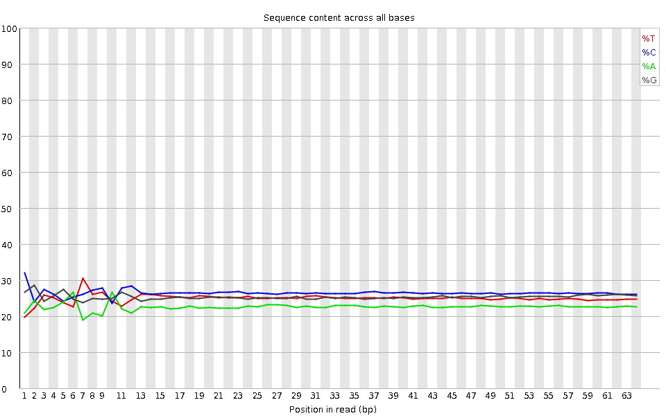
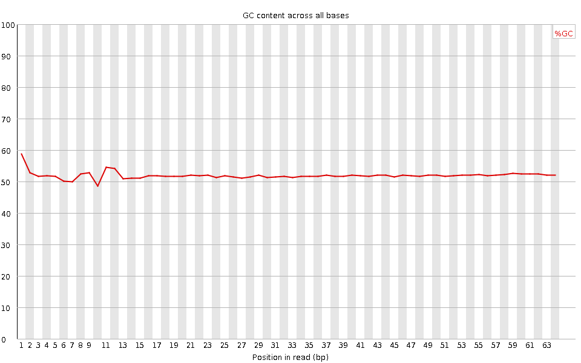
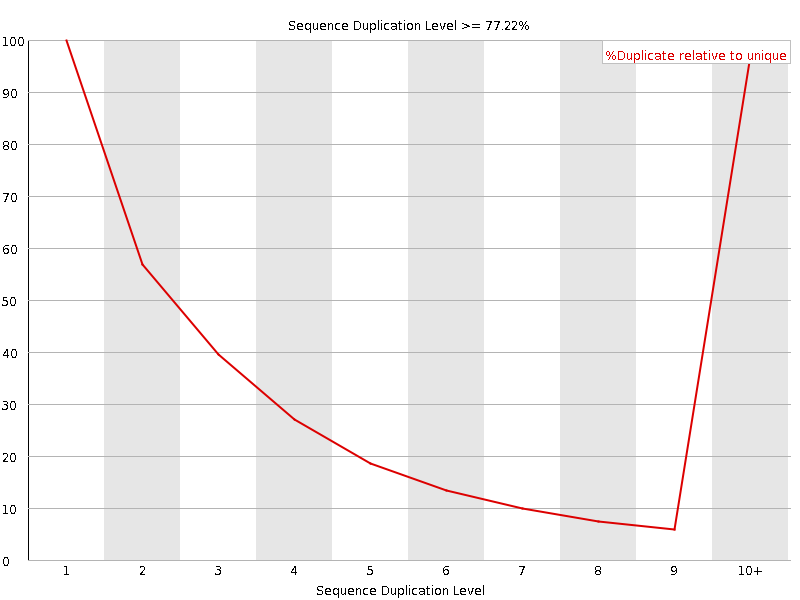
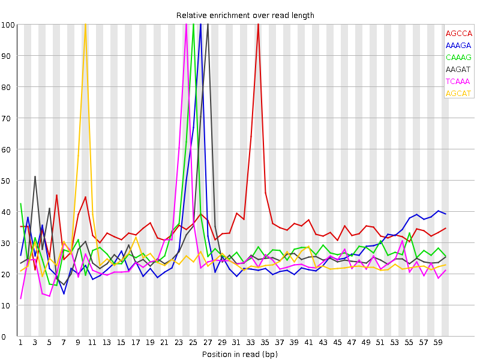

![[OK]](Icons/tick.png) Basic Statistics
Basic Statistics
| Measure | Value |
|---|---|
| Filename | SRR317048_pe_2.f.fastq |
| File type | Conventional base calls |
| Encoding | Sanger / Illumina 1.9 |
| Total Sequences | 60409406 |
| Filtered Sequences | 0 |
| Sequence length | 64 |
| %GC | 52 |
Per base sequence quality

Per sequence quality scores

![[WARN]](Icons/warning.png) Per base sequence content
Per base sequence content

Per base GC content

Per sequence GC content

Per base N content

Sequence Length Distribution

![[FAIL]](Icons/error.png) Sequence Duplication Levels
Sequence Duplication Levels

Overrepresented sequences
| Sequence | Count | Percentage | Possible Source |
|---|---|---|---|
| CCTGCCAGTAGCATATGCTTGTCTCAAAGATTAAGCCATGCATGTCTAAGTACGCACGGCCGGT | 167825 | 0.27781269691676824 | No Hit |
| CTGCCAGTAGCATATGCTTGTCTCAAAGATTAAGCCATGCATGTCTAAGTACGCACGGCCGGTA | 86424 | 0.14306381360545078 | No Hit |
Kmer Content

| Sequence | Count | Obs/Exp Overall | Obs/Exp Max | Max Obs/Exp Position |
|---|---|---|---|---|
| AGCCA | 6230060 | 1.8376673 | 5.1678367 | 34 |
| AAAGA | 4057375 | 1.6341884 | 5.862355 | 26 |
| CAAAG | 4461120 | 1.537658 | 5.316203 | 25 |
| AAGAT | 4141505 | 1.5109807 | 5.444449 | 27 |
| TCAAA | 3843350 | 1.343643 | 5.3327594 | 24 |
| AGCAT | 4235110 | 1.3222826 | 5.09345 | 10 |
| ATTAA | 2742245 | 1.0147641 | 5.053495 | 30 |